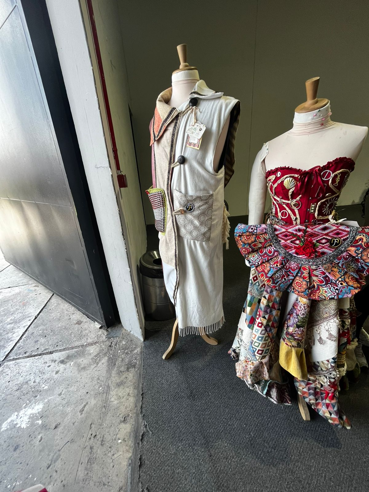
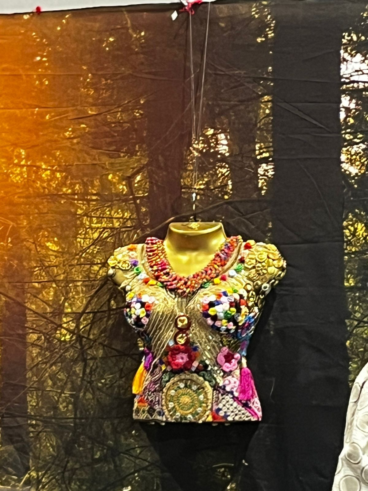
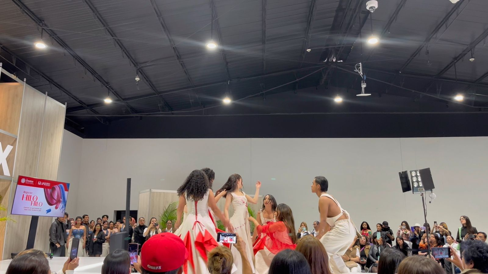
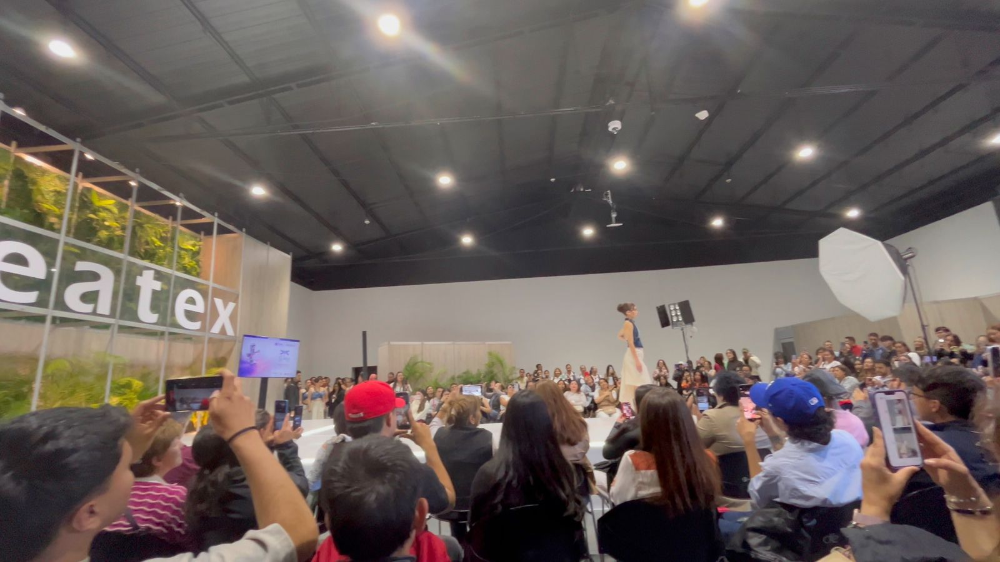
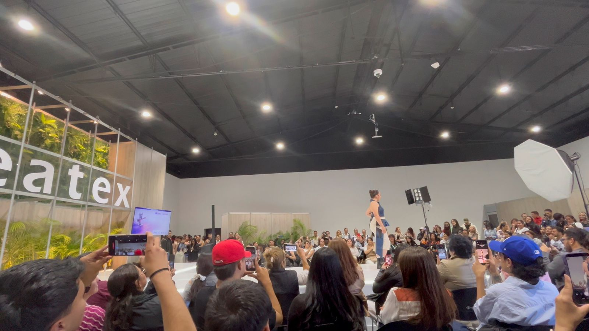

Galería / Gallery






Del insumo a la prenda: la industria textil colombiana conectando innovación, sostenibilidad y desarrollo empresarial.
Colombian Textile Industry Fair
CREATEX 2026 es uno de los eventos más importantes de la industria textil y de confección en Colombia. Organizado por la Cámara Colombiana de la Confección y Afines (CCCyA) y Corferias, reúne a empresarios, confeccionistas, diseñadores, compradores y proveedores.
La feria integra muestra comercial, agenda académica, talleres, demostraciones tecnológicas, ruedas de negocios y pasarelas de moda, permitiendo fortalecer la cadena productiva del sector textil.
Los asistentes tienen la oportunidad de conocer nuevas tecnologías, maquinaria, insumos, tendencias de moda y oportunidades de negocio nacionales e internacionales.
Además, se promueven temas como sostenibilidad, economía circular, innovación, transformación digital y consumo responsable dentro de la industria de la moda.
CREATEX 2026 is one of the most important textile and garment industry events in Colombia. Organized by the Colombian Chamber of Clothing and Related Industries (CCCyA) and Corferias, it brings together entrepreneurs, manufacturers, designers, buyers, and suppliers.
The exhibition includes commercial showcases, academic conferences, workshops, technological demonstrations, business networking sessions, and fashion runways, strengthening the textile production chain.
Participants can discover new technologies, machinery, raw materials, fashion trends, and national and international business opportunities.
The event also promotes sustainability, circular economy, innovation, digital transformation, and responsible consumption within the fashion industry.





CREATEX fortalece el ecosistema textil colombiano al conectar empresas, emprendedores y profesionales del sector, generando oportunidades de innovación, crecimiento económico y posicionamiento internacional.
CREATEX strengthens the Colombian textile ecosystem by connecting companies, entrepreneurs, and professionals, creating opportunities for innovation, economic growth, and international positioning.